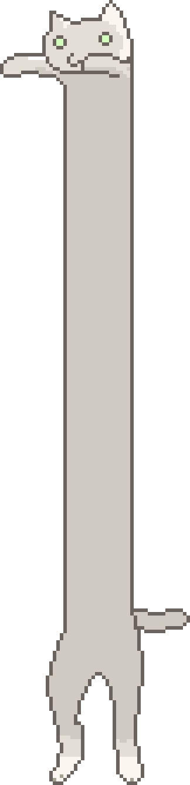

Slidy
Web framework for authoring and showing presentations
Press → or scroll down
or swipe left to go to next slide
Made by
Valentin Nemcev
while applying for a job at Yandex
Slidy on GitHub
How it works
- Use HTML to write your presentation
- Use browser to review and present
- Focus on content, not presentation ;)
How to use it
- Download presentation template
- Open index.html in your favourite HTML editor
- Use provided examples and comments as a reference
-
Optionally setup browser auto-refresh
Live Server
for Node.js is a good choice
Keyboard controls
Should work with remote presenters
→, Space to go to next slide
← to go to previous slide
Esc to go back to slide sorter
Mouse controls
Wireless mouse could be used as a remote presenter
Scroll down to go to next slide
Scroll up to go to previous slide
Can be disabled in presentation options
Touch controls
For reviewing on the go
Swipe left to go to next slide
Swipe right to go to previous slide
Pinch out to go back to slide sorter
Slide sorter view
- All slides at a glance
- Use for quick review or to pick specific slide
- Click or tap on a slide to start slide show
Well-behaved urls
Slidy uses hash part (fragment identifier) of the page url to keep
track of slideshow state
-
Each slide is directly linkable
Link to previous slide
- Position is preserved through browser refresh
-
Back button brings back slide sorter, not previous slide
Adaptive aspect ratio
- Slides always fit the screen, try resizing your browser!
-
Slide sorter
also adapts to screen size and aspect ratio
Focus on content instead of layout
Overflow gives you annoying scrollbars, which bring attention to
problematic slide, but still show all the content

Image credit
Todo markup
Built-in style for marking work-in-progress parts of the presentation
Very useful during authoring
- Use your presentation as a to-do list
-
Never forget to remove or update to-do item before presenting
-
Add usage examples for elements and whole slides
Browser support
- Should work in modern browsers, desktop and mobile
-
Tested in IE9+, Chrome and Firefox on Windows; Android Browser
Planned features
Not done yet
- Slide numbers
- Better layout
- Slide templates
- Outline
- Printout generation
- Easy setup for other languages and live browser preview
Outline
Not done yet
- Use mindmap/outline to structure presentation
- Switch between outline and slide sorter
- Split presentation into sections
-
Use HTML5 outline
standard
and
implementation
Real world usage
-
Presenting:
A talk for a local meetup on 13th of May will use Slidy
Update: it was a success!
-
Applying for a job:
Job application for a position of a programmer at Yandex, sent on
6th of May, featuring Slidy as a sample project
Stay tuned for results!
How it was made
Check out short
description
(in Russian) about how this project was made